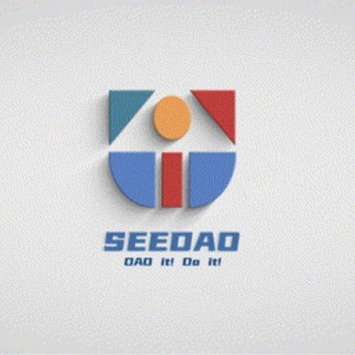

SeeDAO 新人登船指南
作者: 定慧
如何加入 SeeDAO？成为正式成员之一？

如何加入 SeeDAO？成为正式成员之一？我们为每一位关注 SeeDAO 的伙伴设计了这样一条路径：你可以先登录 DeSchool 观看 onboarding 登船指南视频并完成测验，链接钱包领取 SBT，即可正式加入 SeeDAO！这份视频中有成为一个 SeeDAO 所需要知道的全部信息，这枚 SBT 即为一个 SeeDAO 成员的链上身份证明之一。凭借 SBT 在 SeeDAO Discord 验证身份，即可解锁全部频道与内容。https://deschool.app/series/seriesintro/62f0adc68b90ee1aa913a965（请用装有 Matemask 钱包的浏览器打开链接）如果你暂时无法获取小狐狸钱包，也可以在这里提前观看我们的 Onboarding 视频：欢迎每一位对 SeeDAO 感兴趣的小伙伴通过 DeSchool 学习视频领取 SBT 哦~- https://docs.google.com/presentation/d/1AwMzd-rR3Mn2Gm2C7AOVuT-EeeKvXdaA9mxvY4CPC5I/edit#slide=id.g1becca39ec3_2_1030
- https://www.notion.so/seedao/SeeDAO-SIP-2-a4720f18c068455785a7a9ee5fd626ee
- https://seedaoevent.azurewebsites.net/#](https://seedaoevent.azurewebsites.net/#)
作者：定慧
排版：Qiao
审核：SuanNai